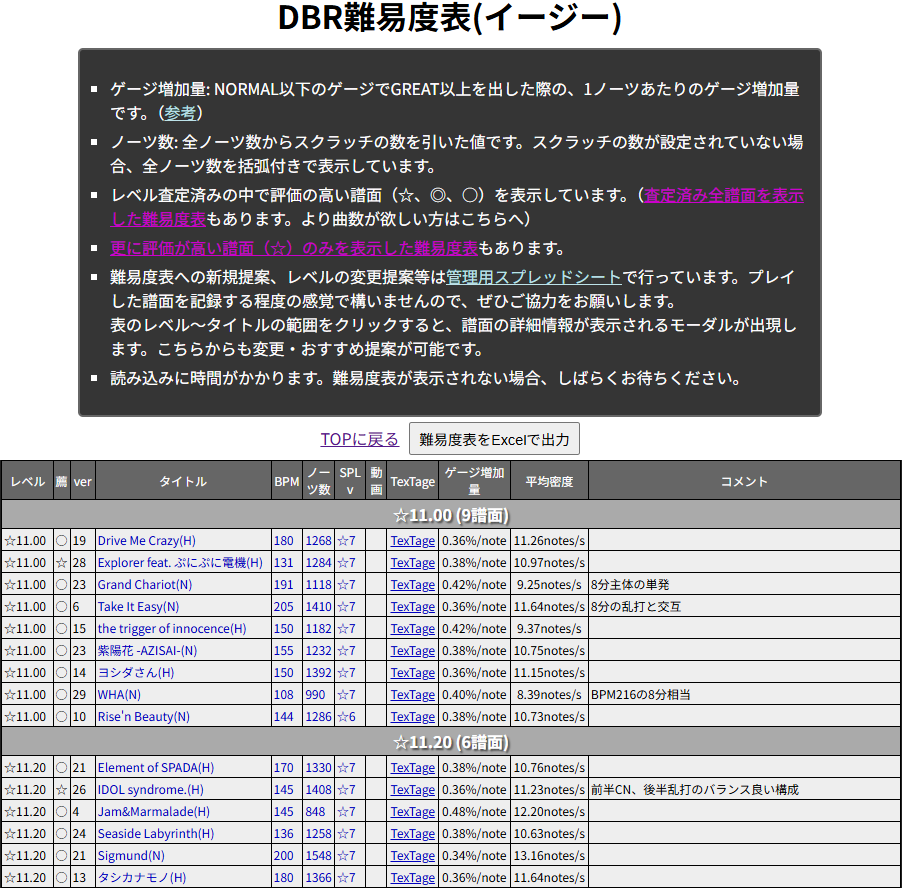
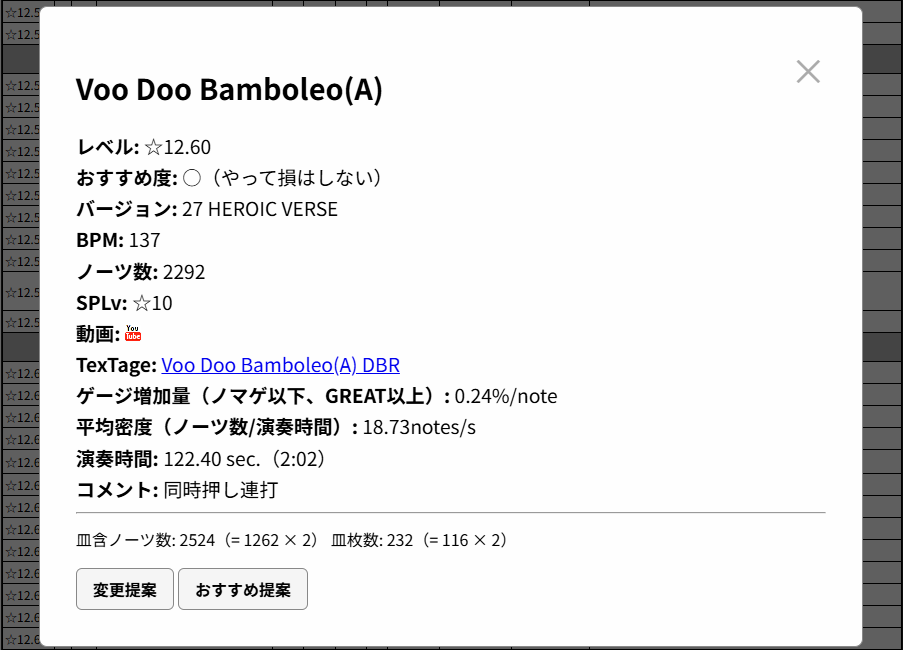
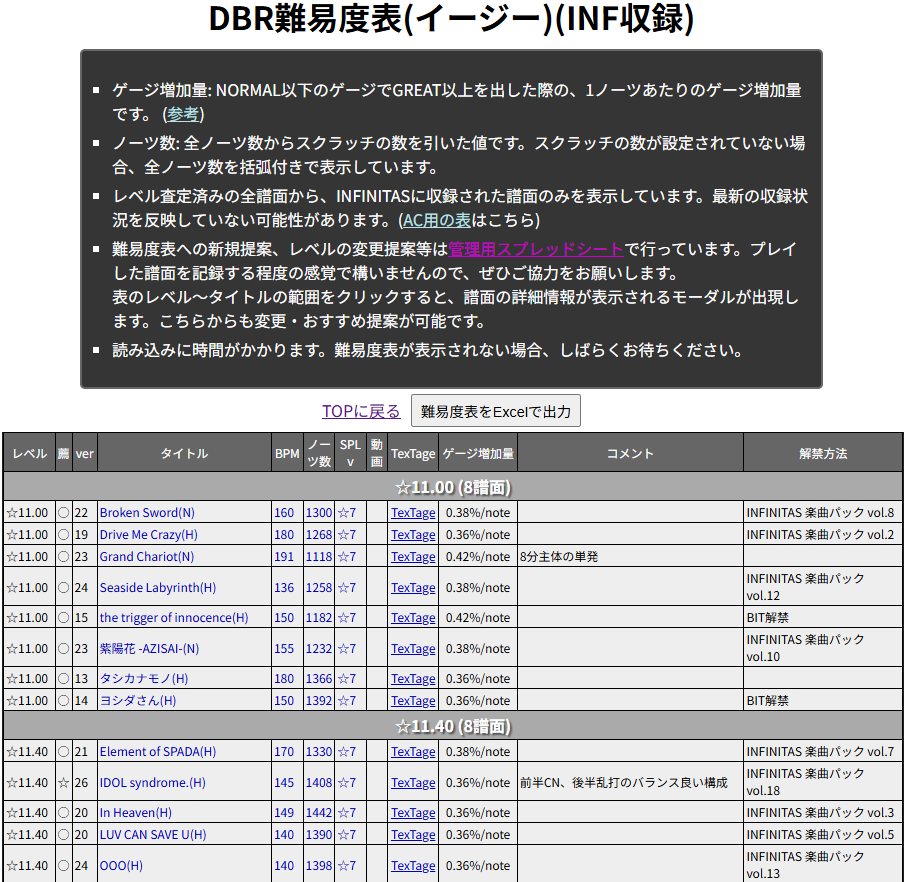
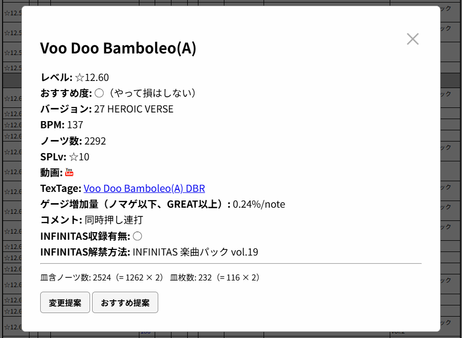
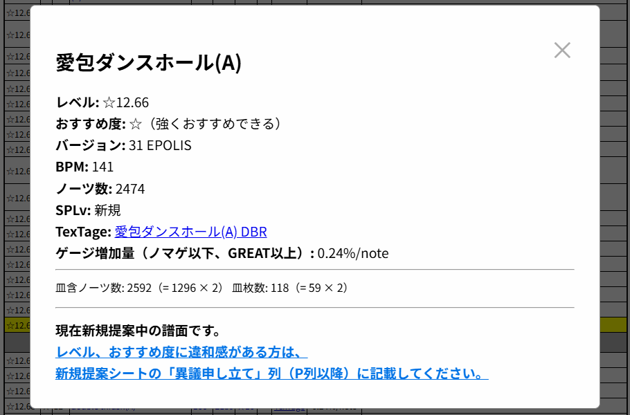
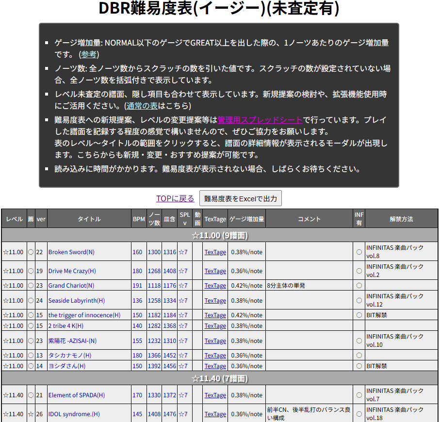
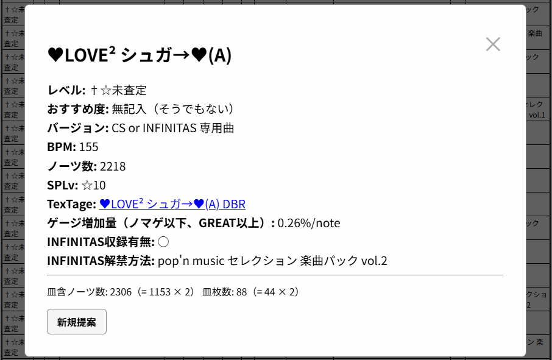
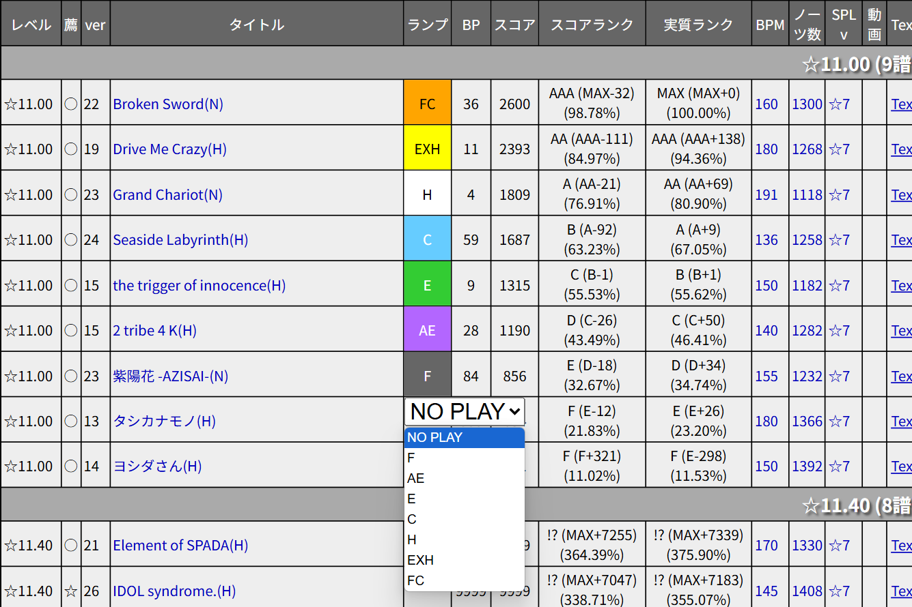

DBR難易度表について
TOPに戻る
【はじめに】
このサイトのDBR難易度表は、あらゆるDBRプレイヤーが参考にできるよう、可能な限り多くの譜面を収録することを目標としています。
難易度表の管理用スプレッドシートに「新規提案」シートがあります。
「曲名+譜面難易度（H、Aなど）」と「レベル」だけでも記載していただければ、それだけ難易度表が充実していきます。
ぜひご協力をお願いします！
DBRでプレイすることができる全ての譜面に対してレベル付けをすることができます！
CS、INFINITAS限定の曲、現行AC作品で削除済の曲も提案可能です。
※現仕様のDBRを使用する方法がないCS8th、AC9thまでにしか収録されていない曲については、提案不可とします。
【前提】
DBR（BATTLE、両側RANDOM、AUTO SCRATCHの状態）の難易度表です。
現在、イージー基準の難易度表のみを運営しています。
この「イージー基準」とは、アシストイージーまたはイージーゲージで80%以上残す、ハードゲージで完走のどちらか簡単な方とします。
厳密には「イージー以上基準」と言い換えられます。極端なラス殺し曲などに対して、過剰なレベル設定をする必要はありません。
☆12.70までの譜面は、非公式難易度表を参考にできるよう近似した難易度値になっています。
しかし、DBRには正規譜面という概念が存在しないこと、基準値がイージーとノマゲで違うこと、何より全く別の表であることをご留意ください。
詐称、逆詐称の概念はDBR難易度表内での相対評価に留めてください。（非公式難易度と近づけるために☆xx.xxの全譜面を丸ごと上げたい、下げたいなどは応相談）
現在難易度表内の最低レベルは☆10.70となっていますが、これより下の譜面を提案しても問題ありません。
その場合、レベル設定時には非公式難易度の値となるべく近似させてください。
非公式難易度表の実質的な下限である☆6.00未満の譜面を提案する場合、
公式の難易度と比較し、小数第二位までの表記で妥当だと思われる値を入力してください。
☆12.71以降のレベルについては、非公式難易度表とは無関係に、譜面群内でのレベル差に応じてレベル付けされています。
（目安として、概ね現状の☆12.80～が☆10最上位帯、☆12.89～が☆11最上位帯です）
☆12.80がイージーできる人であっても、非公式難易度表で12.7の譜面が全てイージーできるとは限りません。
全ての譜面は5段階のおすすめ度で仕分けています。（今後著しく曲数が増えた場合、段階を増設する可能性があります）
- 強くおすすめできる（☆）
- おすすめできる（◎）
- やって損はしない（○）
- やるのもよい（△）
- そうでもない or 未入力（空欄）
データベースとしての役割と、おすすめ譜面リストとしての役割を両立させる狙いがあります。
そのため、いわゆる「良譜面」以外を提案しても全く問題ありません。
逆にそれが
「良譜面」だと思った場合に、おすすめ度を設定してください。
一部難易度表で採用されているLEGACY NOTEやDBHRなど、他オプションは考慮しません。
ただし、コメントにそれらの難易度やおすすめ度などを追記するのは可とします。
例:「レガシーで☆12.60」「DBHRなら☆12.88、☆」（強くおすすめ）など
難易度表のデータは全て管理用スプレッドシート内で管理しています。
それぞれ記載していただくようお願いします。
【アーケード作品用の表】
【前提】にある「おすすめ度」によって表示を分けた3種類が存在します。

[難易度表をExcelで出力]ボタンをクリックすると、Excelファイルで現在表示中の難易度表が出力できます。
詳細は【難易度表をExcelで出力】をご参照ください。
以下、難易度表内の項目です。
- レベル：譜面のレベルです。詳細は【前提】をご参照ください。
- 薦：譜面のおすすめ度です。(おすすめ)表の場合、「☆」のみを表示しているため省略されます。詳細は【前提】をご参照ください。
- ver：楽曲のAC初収録バージョンです。substreamは「s」で、CSおよびINF限定の曲は「0」としています。
- タイトル：曲名+(難易度)です。
- BPM：譜面のBPMです。ソフランがある場合、表記は「最小値-最大値」となります。
- ノーツ数：譜面の全ノーツ数からスクラッチの数を引いた、実質ノーツ数です。スクラッチ数のデータが未登録の場合、全ノーツ数を括弧付きで表示します。
- SPLv：譜面のSPにおけるレベルです。
- 動画：譜面確認用のプレイ動画です。掲載にご協力いただける方は、管理用スプレッドシートの「修正依頼」シートに記載いただくか、＠DBR_Difficulty宛にDMをお送りください。
- TexTage：譜面確認用のTexTageリンクです。表読み込み時に乱数生成しているため、画面のリロードまで同じ譜面は同じ配置のURLになります。
- ゲージ増加量：NORMAL以下のゲージでGREAT以上を出した際の、1ノーツあたりのゲージ増加量です。（参考）
- 平均密度：ノーツ数/演奏時間で算出される、1秒あたりの平均ノーツ数です。小数第二位まで表示します。休憩や密度が薄い地帯の長さによっては、値がレベルの実態とそぐわない場合があります。
- コメント：譜面のおすすめコメント、譜面傾向、解説、攻略情報などが記載されます。

表の「レベル」から「タイトル」までの範囲をクリックすることで、譜面の詳細情報についてのモーダルが表示されます。
- レベル～コメント：表で表示されているものと同一ですが、略称などはモーダル用に戻しています。表で空だった項目は表示されません。
- 皿含ノーツ数：スクラッチを含んだ譜面の全ノーツ数です。データが空の場合、「不明」と表示されます。
- 皿枚数：全ノーツ中のスクラッチノーツの数です。データが空の場合、「不明」と表示されます。
- 変更提案：レベルの変更提案を行えます。詳しくはこちら→モーダル：変更提案
- おすすめ提案：おすすめ度の変更提案を行えます。詳しくはこちら→モーダル：おすすめ提案
AC現行作品で遊べない曲は「†☆」として扱い、最下部に表示されます。
移植、復活時などは管理者側が「†☆」用のフラグを消すだけなので、即日～数日中に反映されます。
【INFINITAS用の表】
ACに比べてリトライが容易であり、選曲時間の制限もないため「おすすめ度」による表示分けは行っていません。（希望があれば作成します）
INFINITASでプレーできる譜面のみ表示します。そのため「†☆」の区分けもありません。

表示内容はAC用の表と同じですが、以下の項目を追加しています。
- 解禁方法：楽曲の解禁方法を記載しています。デフォルト解禁の場合、空欄になっています。

モーダルの表示内容も同様です。
- INFINITAS収録有無：便宜上表示していますが、全て「○」になります。
- INFINITAS解禁方法：表で表示されているものと同一ですが、デフォルト解禁の場合「デフォルト解禁」と表示されます。
【新規提案有の表】
全譜面に加え、管理用スプレッドシートの「新規提案」シートに記載された曲も追加で表示します。
難易度査定に協力していただける方、とにかく譜面数が欲しい方におすすめです。
アーケード用、INFINITAS用の両方が存在します。
新規提案されている譜面は黄背景で表示されます。レベルの相対比較にお使いください。
難易度やおすすめ度に違和感がある場合、「新規提案」シートの「異議申し立て」列に記載してください。
SPLvが「新規」となり、TexTageのリンク先でレベルがうまく表示されませんが、仕様です。（技術的限界）

新規提案譜面を選択した場合、提案のボタンは表示されません。
代わりに新規提案シートへのリンクが表示されますので、レベル、おすすめ度に違和感がある方はそちらから異議申し立てをお願いします。
【未査定譜面有の表】
査定済全譜面に加え、☆7以上のDBRでプレー可能（=新規提案可能）な全未査定譜面を表示します。
☆6以下の一部譜面も表示されますが、データ量の関係で全譜面を網羅できていないため、
表示されていない譜面の登録を希望する方は管理用スプレッドシートの「修正依頼」シートに記載いただくか、
直接「新規提案」シートに必要事項を記載して提案してください。

表示内容はAC用の表と同じですが、以下の項目を追加しています。
- 皿含：スクラッチを含んだ譜面の全ノーツ数です。
- INF有：INFINITASに収録済みの場合、「○」が表示されます。現在未査定譜面の多くはINFINITAS向け情報が入力されていないため、空欄でも収録済みの場合があります。
- 解禁方法：INFINITAS内の楽曲解禁方法を記載しています。デフォルト解禁、またはINFINITASの情報が未入力の場合、空欄になっています。

モーダルの表示内容も同様ですが、この難易度表のみ未査定譜面を選択できるので、併せて紹介します。
- おすすめ度：未査定譜面にはほぼ入力されていない項目のため、良い譜面だと思ったら新規提案時におすすめ度をつけてください。
- INFINITAS収録有無：INFINITASに収録済みの場合、「○」で表示されます。現在未査定譜面の多くはINFINITAS向け情報が入力されていない為、非表示でも収録済みの場合があります。
- INFINITAS解禁方法：「INFINITAS収録有無」が「○」の場合のみ表示されます。表で表示されているものと同一ですが、デフォルト解禁の場合「デフォルト解禁」と表示されます。
- 新規提案：譜面の新規提案を行えます。詳しくはこちら→モーダル：新規提案
【モーダル：新規提案】
難易度表への新規提案を行えます。プレイ済みであればどんな譜面でも構いません。
表にある譜面全てが新規提案可能です。
以下の項目を入力し、[提案を送信]をクリックしてください。レベル以外の必須項目は、自動で入力されます。
- レベル（必須）：譜面のレベルを小数第二位までの数値で入力してください。詳細は【前提】をご参照ください。
- おすすめ度（任意）：譜面のおすすめ度を選択してください。詳細は【前提】をご参照ください。
- コメント（任意）：譜面に対してのおすすめコメント、譜面傾向、解説、攻略情報など、自由に入力してください。
- INFINITAS収録有無（任意）：INFINITASにその譜面が収録済みの場合、「INF有り」を選択してください。
「INFINITAS収録有無」で「INF有り」を選択した場合、以下の項目を表示します。
- INFINITAS解禁区分（任意）：INFINITAS内の楽曲解禁方法を選択してください。楽曲パックの場合、vol.も入力してください。
「詳細な譜面情報を提供する」を選択した場合、以下の項目を表示します。
- SP総ノーツ数（任意）：提案する譜面の、SP譜面としての総ノーツ数です。
- SP皿枚数（任意）：提案する譜面の、SP譜面としての総スクラッチノーツ数です。
- BPM（任意）：提案する譜面のBPMです。ソフランする場合「最小値-最大値」で記載してください（例：95-210）、
- TexTageID（任意）：TexTageで提案する曲を表示した際のURLから、「https://textage.cc/score/バージョン/（ここを入力してください）.html」
- 動画URL（任意）：提案する譜面の動画URLを入力してください。提案者ご自身の動画か掲載許可を得た動画URLでお願いします。
この項目が既に記載されている場合は、そのまま送信してください。2動画以上掲載したい場合は、送信後に備考欄へ追記してください。
送信後、新規提案シートに遷移します。
送信した新規提案が正しく反映されていることを確認してください。備考を入力したい方は、このタイミングで追加するようお願いします。
【モーダル：変更提案】
難易度表に登録されている譜面のレベル変更提案を行えます。
どんどん動かして、レベルを実態に近づけていきましょう。
以下の項目を入力し、[提案を送信]をクリックしてください。レベル以外の必須項目は、自動で入力されます。
- 変更後レベル（必須）：変更したい譜面のレベルを小数第二位までの数値で入力してください。詳細は【前提】をご参照ください。
- 提案理由（必須）：そのレベルに変更したい理由を入力してください。
送信後、変更提案シートに遷移します。
送信した変更提案が正しく反映されていることを確認してください。
【モーダル：おすすめ提案】
難易度表に登録されている譜面のおすすめ度変更提案を行えます。
特に譜面の多いゲームなので、良い譜面には良いと評価して、快適にプレーしやすくしていきましょう。
以下の項目を入力し、[提案を送信]をクリックしてください。レベル以外の必須項目は、自動で入力されます。
- 変更後おすすめ度（必須）：変更したい譜面のおすすめ度を選択してください。詳細は【前提】をご参照ください。
- 提案理由（必須）：そのおすすめ度に変更したい理由を入力してください。
送信後、おすすめ提案シートに遷移します。
送信したおすすめ提案が正しく反映されていることを確認してください。
【難易度表をExcelで出力】
難易度表の内容をExcelファイルとして出力します。INFINITAS用、未査定有などを含め、どの難易度表ページでも出力可能です。
BPM順でのソート、新規・変更提案用のメモ書きや、最小BPやクリアランプでの絞り込み(拡張機能使用時)など、ご自由にお使いください。
拡張機能と併用する場合は、表更新時の最新化が二度手間になってしまうため、プレイ履歴の管理は拡張機能側で行うことを強く推奨します。
プレイヤー補助ツール
【拡張機能使用時の追加項目】
難易度表を拡張し、ブラウザにプレー記録を保存できるようになります。
詳細は拡張機能のページをご参照ください。

- ランプ：クリアランプを保存できます。
- BP：BPを保存できます。
- スコア：スコアを保存できます。入力後、下記のスコアランク2種が表示されます。
- スコアランク：総ノーツ数から計算される、実際に筐体で表示されるスコアランクです。小数第二位までのスコアレートも表示されます。
- 実質ランク：総ノーツ数からスクラッチを抜いた、実質ノーツ数から計算されるスコアランクです。小数第二位までのスコアレートも表示されます。
拡張機能を使用している場合、モーダルにも内容が反映されます。
- クリア状況～実質スコアランク(スコアレート)：表で表示されているものと同一ですが、略称などはモーダル用に戻しています。表で空だった項目は表示されません。
【DBRプレー記録管理ページ】
ブラウザにプレー記録を保存します。拡張機能と記録を共有しています。
軽量化、操作性の向上のため、最新の難易度表ではなくあらかじめ生成済のデータを使用しており（ページ上部に最終生成日を記載しています）
表示する項目や機能も最低限のものになっています。
上記理由のため難易度表の確認にはおすすめしませんが、拡張機能非対応のブラウザでも使用可能で、ゲームセンターなどの手早く使用したい場面に適しています。
SPLv順（デフォルト）、難易度表レベル順、バージョン順を自由に切り替えられ、
フォルダごとの開閉、タイトル検索（部分一致）での絞り込みも可能です。
現行AC作品でプレーできない譜面はグレーで表示されます。（AC用難易度表の†☆xx.xxと同じ）